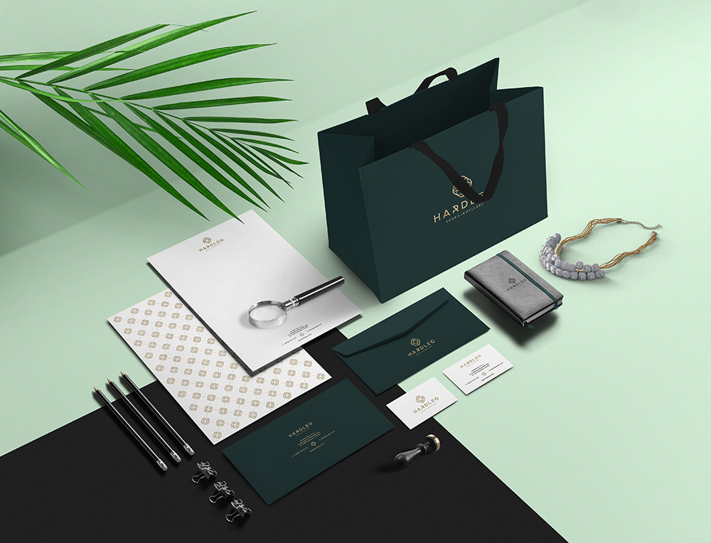
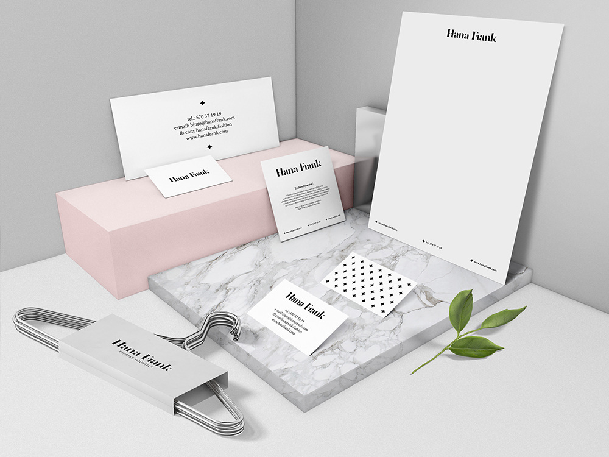
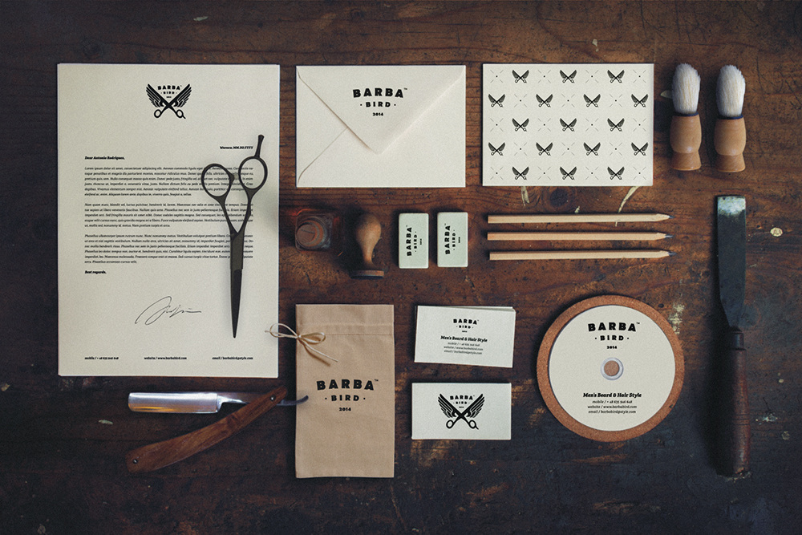
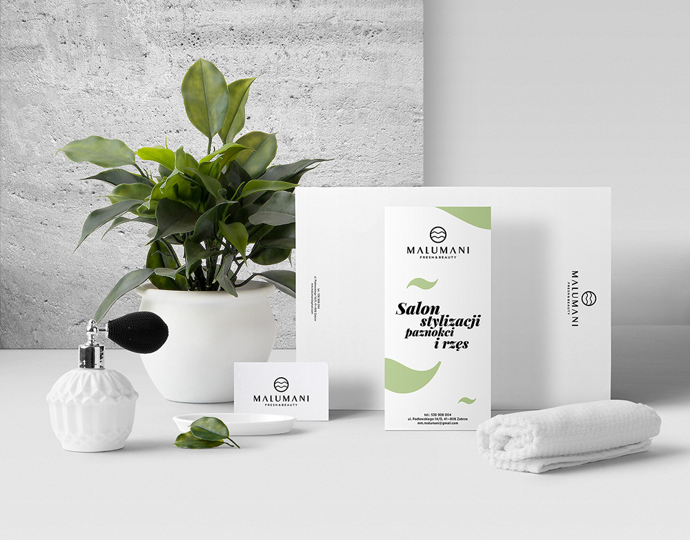
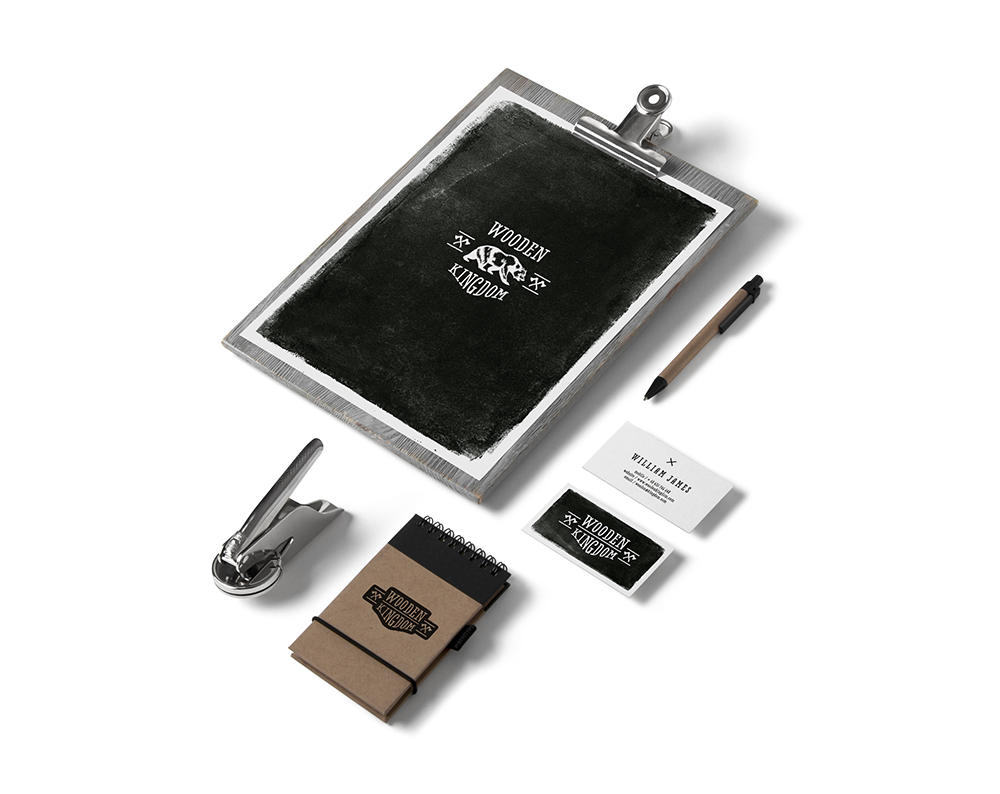

Osiedle Zielona Dolina
Zielona Dolina to inwestycja przygotowana z myślą o
osobach poszukujących wymarzonego miejsca do
zamieszkania na lata. Spokój, kameralna okolica i
wszechobecna zieleń tworzą przyjazne otoczenie, w
którym z przyjemnością spędza się czas. Stanie się
ono azylem dla powracających z pracy, szkoły czy
uczelni, którzy oczekują wytchnienia od zawodowych
obowiązków i chcą cieszyć się życiem prywatnym.

Hardleo Gems & Jewellery
W Hardleo łączymy pasję podróżowania z fascynacją
kamieniami z najdalszych zakątków Ziemi. Jesteśmy w
ciągłym ruchu, podróżujemy i szukamy
najpiękniejszych kamieni. Importujemy oszlifowane
kamienie ozdobne i kamienie szlachetne, realizując
zamówienia głównie dla branży jubilerskiej, jak
również osób prywatnych.

Hana Frank
Hana Frank by Ronoviecka to niekonwencjonalna,
ekskluzywna marka odzieżowa. Projekty marki cechuje
prostota, szyk oraz bezpretensjonalna elegancja.
Pasja i zaangażowanie projektantek są widoczne w
każdym detalu.

Barba Bird
The author created a distinctive image of the barber
shop & the barber salon basing on a functional
design that would easily be recognized and would be
distinguished among other such brands in the world.

Malumani
MaluMani to niezwykły salon kosmetyczny oferujący
usługi w zakresie stylizowania paznokci i rzęs. W
jego ofercie znajdują się zabiegi dla Pań i Panów.
Uwodzicielskie i spokojne miejsce w stylu
eklektycznym. Poczujesz niezwykły klimat, łączący
nowoczesność z tradycją. Salon kosmetyczny znajduje
się w ścisłym centrum Zabrza w kamienicy, na murach
której zapisał się ząb czasu.

Eleven46
Eleven46 is a Belgian company specialised in making
fashionable socks. The designs are made at their
Brussels HQ and made with the finest precision in
Italy. They are still pretty young. They are
available in stores and online on www.eleven46.co.

National Museum in Warsaw
The National Museum in Warsaw (Polish: Muzeum
Narodowe w Warszawie), Poland, is a national
institution of culture, one of the largest museums
in Poland and the largest in Warsaw. It comprise a
rich collection of ancientart (Egyptian, Greek,
Roman), counting about 11.000 pieces...

Wooden Kingdom
Wooden Kingdom is a young enterprise taking its
first steps in the clothing business. It focuses on
quality and solidity of its products. These products
are addressed to true, strong men who are not afraid
to face up to the nature’s elements.